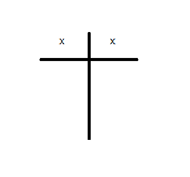
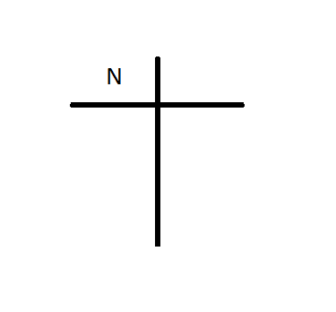
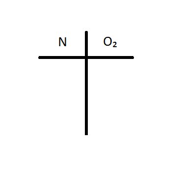
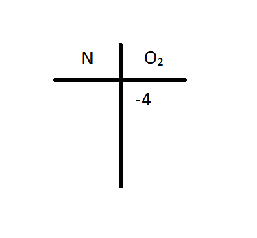
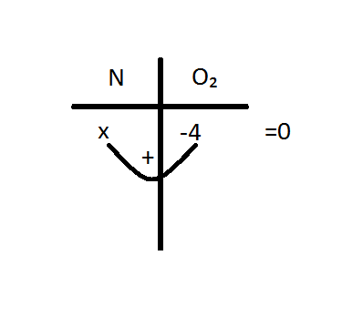

Tabelën e formojmë në formë kryqi nëse komponimi përmban dy elemente të ndryshme.

Në anën e majtë paraqesim elementin e parë dhe në anën e djathtë paraqesim elementin e dytë.
Sepse duhet t'i rendisim elementet sipas renditjes në komponim.
Shembull: Marim komponimin, dyoksidi i azotit NO₂
Së pari e paraqesim azotin në anën e majtë pasi N gjendet në fillim të komponimit.

Dhe pastaj paraqesim 2 atomet e Oksigjenit në anën e djathtë

Anën e djathtë posht tani do të shkruajmë prodhimin mes 2 (numrit të oksigjenave) dhe -2 (numrit negativ të valencës së oksigjenit)

Tani duhet te gjejmë numrin e valencës së Azotit të cilën e paraqesim me X. Ku duhet të bëjmë x+(-4)=0, shkruajmë në fund barazi me 0 pasi duhet ta barazojmë me 0 për të gjetur valencën e saktë.

X+(-4)=0 dim që x na paraqet 4 ku na tregon se Azoti është katër valent IV